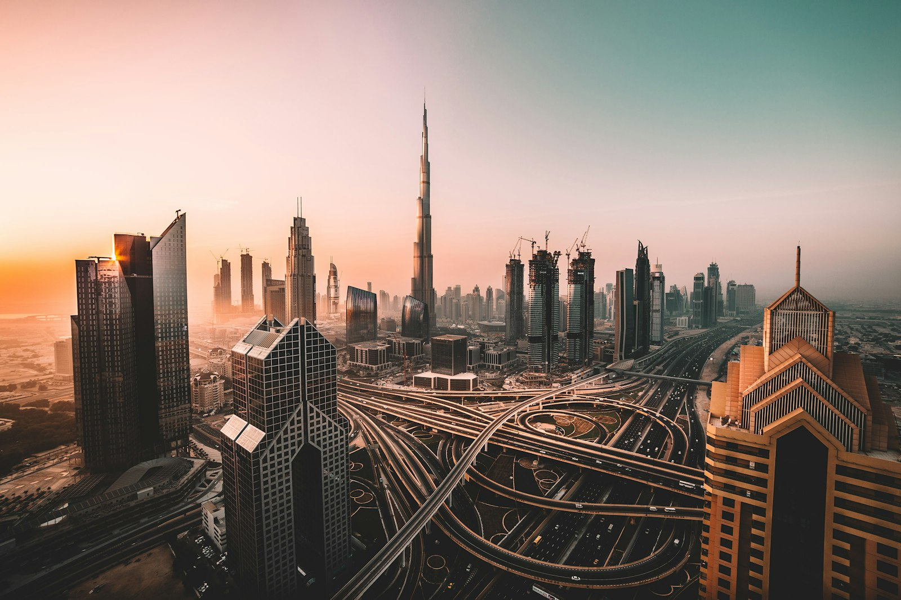
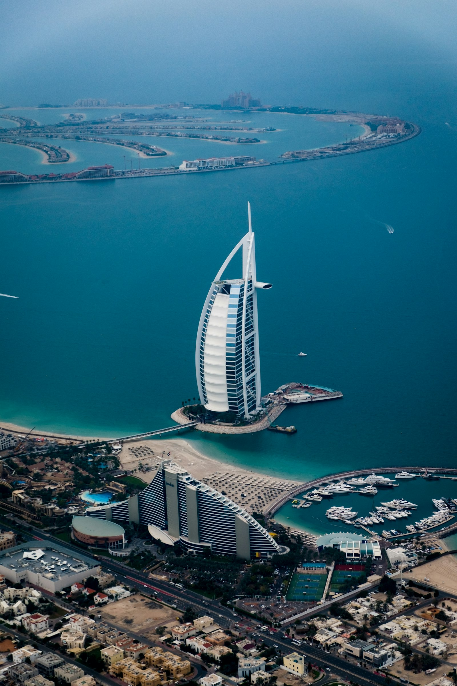
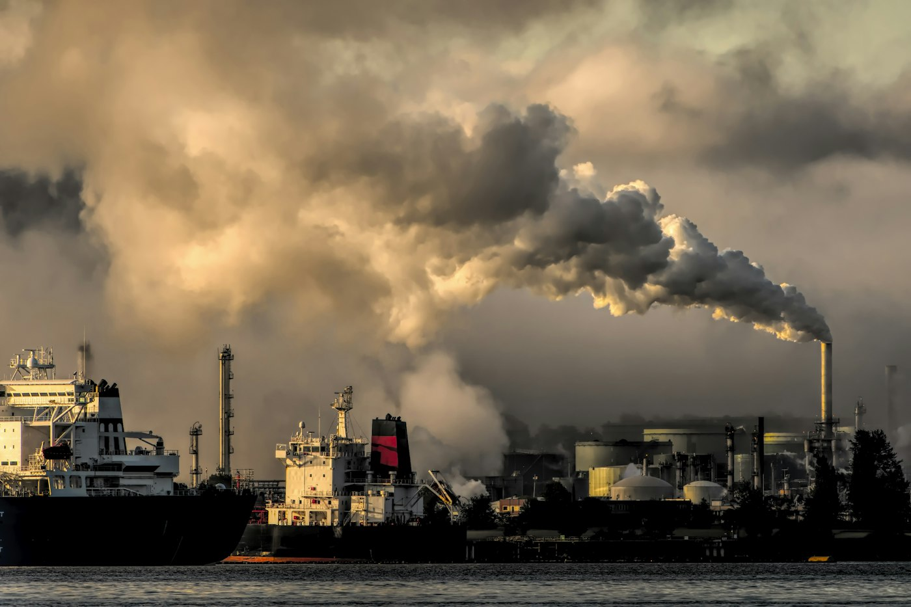
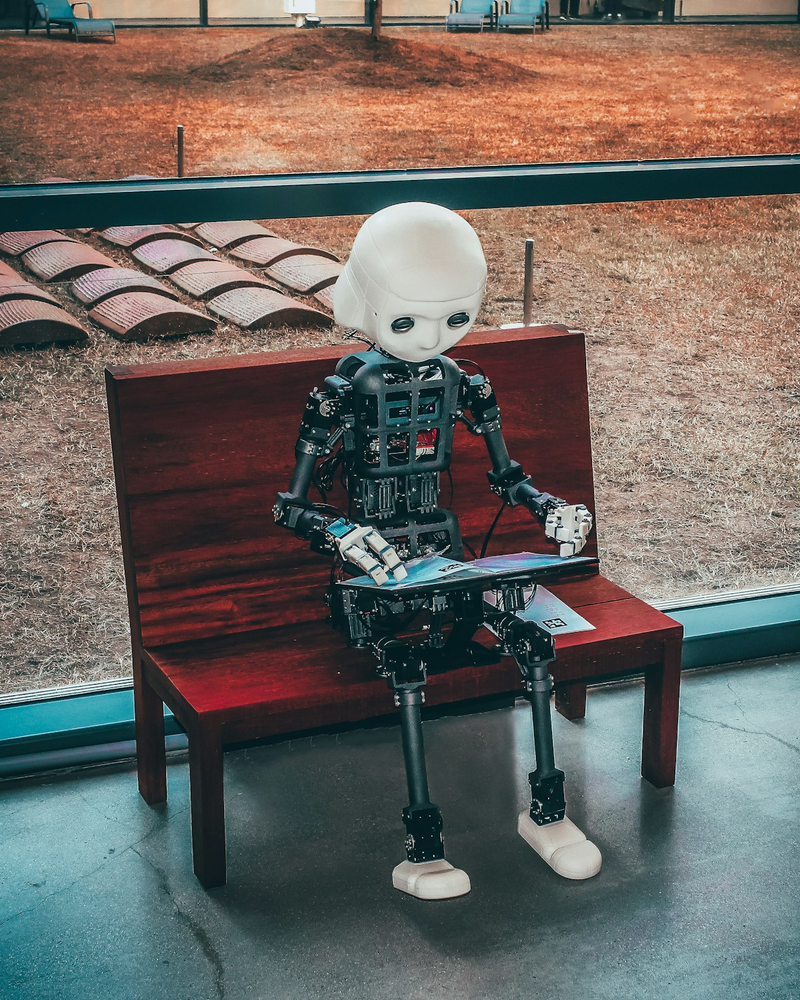
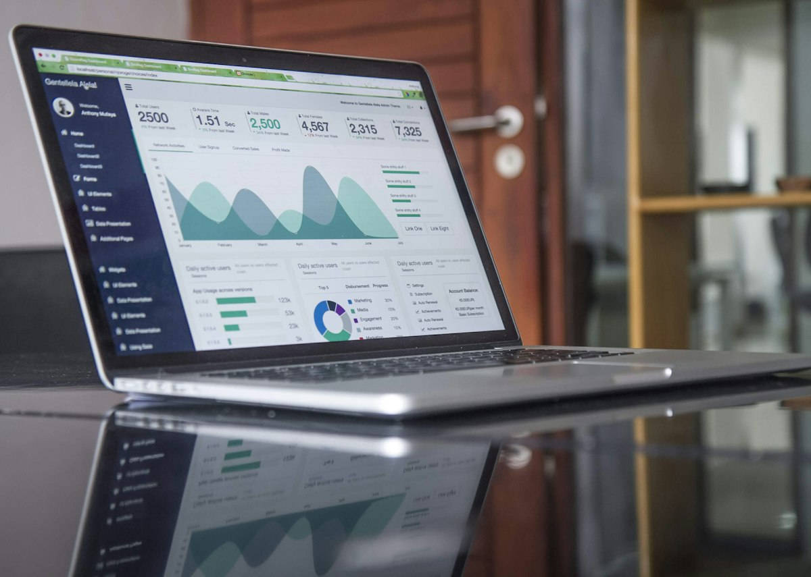

٩٦ سنة تقنية سعودية · 12 بوستر · صور حقيقية · @Ahmed014x
احمد الحربي
اليوم الوطني

من أول إشارة… إلى مدار وذكاء
٩٦ سنة
تقنية سعودية
تقنية سعودية
هذه السلسلة تروي كيف انتقلت المملكة من بدايات الاتصال والبث والطاقة، إلى منظومة رقمية واسعة تضم الحكومة الإلكترونية، والفضاء، والذكاء الاصطناعي.
القصة ليست محطات منفصلة؛ كل جيل تقني مهّد للذي بعده — من موجة الراديو إلى الأقمار الصناعية ونماذج اللغة.
1 / 12
@Ahmed014x
احمد الحربي
الجزء 02

الخط الزمني
المسار الكامل في ست محطات
على امتداد نحو قرن، لم تكن التقنية مشروعًا واحدًا؛ بل طبقات متراكمة: اتصال، طاقة، بث، شبكة، ثم تحول رقمي وطني يقودنا اليوم نحو الفضاء والذكاء.
1930s–50s — راديو وبرق: أول جسر معلوماتي يربط المناطق
1950s+ — نفط وصناعة: تمويل بنية تحتية ومعرفة هندسية
1960s–90s — تلفزيون واتصالات: بث وطني وشبكات هاتف
1990s–2010s — إنترنت وحكومة إلكترونية ثم جوال وخدمات
2016–اليوم — رؤية 2030، فضاء، وذكاء اصطناعي وطني
2 / 12
@Ahmed014x
احمد الحربي
الجزء 03
1930s – 1950s
الراديو والبرق
قبل الشاشات والهواتف الذكية، كانت الموجات الراديوية والخطوط البرقية وسيلة الدولة والمجتمع لتبادل الأخبار والتعليمات والأخبار الرسمية عبر المسافات الشاسعة.
محطات البث نقلت الصوت إلى البيوت، بينما خدمت الرسائل البرقية الإدارات والقطاعات بسرعة لم تكن ممكنة بالبريد التقليدي وحده. هذه البنية كانت اللبنة الأولى لثقافة «الاتصال الفوري».
توسيع تغطية البث تدريجيًا ليشمل مناطق أوسع من المملكة
تأسيس عادة الاستماع الوطني وربط المواطن بالمعلومة الرسمية
3 / 12
@Ahmed014x
احمد الحربي
الجزء 04

1950s+
النفط والتقنية الصناعية
لم يكن النفط مجرد مورد اقتصادي؛ بل محرّكًا أدخل أنظمة قياس، وتحكم، وتشغيل صناعي متقدم، وموّل شبكات النقل والاتصال والتعليم التي غذّت الأجيال التقنية اللاحقة.
المصافي والمعامل والأنابيب احتاجت مهندسين وأدوات رصد وبنية لوجستية — فنشأت خبرة وطنية في التشغيل المعقّد أصبحت أساسًا لأي تحول صناعي أو رقمي لاحق.
استثمار طويل الأمد في البنية التحتية والمعرفة الهندسية
ربط مناطق الإنتاج بالأسواق عبر أنظمة نقل ومراقبة
4 / 12
@Ahmed014x
احمد الحربي
الجزء 05
1960s – 1990s
التلفزيون والاتصالات
مع انطلاق البث التلفزيوني الوطني، دخلت الصورة إلى المنازل إلى جانب الصوت، وأصبحت المعلومة والترفيه جزءًا يوميًا من الحياة العامة في المدن ثم القرى.
في الوقت نفسه توسّعت شبكات الهاتف، ثم ظهرت بدايات الجوال، فتهيّأت البنية المادية — أبراج وكابلات ومحطات — التي سيعتمد عليها الإنترنت لاحقًا دون أن يبدأ من الصفر.
بث وطني: توحيد الرسالة الإعلامية ووصولها لشرائح أوسع
هاتف وجوال: اتصال شخصي ومؤسسي على نطاق متزايد
5 / 12
@Ahmed014x
احمد الحربي
الجزء 06
1990s – 2010s
الإنترنت والحكومة الإلكترونية
دخول الإنترنت غيّر إيقاع العمل والحياة: من الاتصال البطيء المنزلي إلى بروودباند أوسع، ومن الورق والطوابير إلى مواقع وبوابات رسمية تقدّم معلومة وخدمة عن بُعد.
بدأت علاقة المواطن بالدولة تتحول رقميًا؛ ظهرت بوابات إلكترونية، وتدريجيًا صارت الخدمة العامة مسارًا يمكن إكماله دون زيارة ميدانية في كثير من الحالات — وهذا الأساس الذي بُنيت عليه تطبيقات الجوال لاحقًا.
انتشار الاتصال المنزلي والمؤسسي عبر مراحل تقنية متتالية
انتقال تدريجي من «معلومة على موقع» إلى «خدمة مكتملة أونلاين»
6 / 12
@Ahmed014x
احمد الحربي
الجزء 07
2010s
الجوال والخدمات الرقمية
الهاتف الذكي نقل الحكومة والخدمات إلى الجيب. منصات مثل أبشر ونفاذ لم تعد «مواقع تُفتح من المكتب» فحسب، بل تجارب يومية يُنجز عبرها المواطن معاملات مدنية وهوية رقمية بضغطة.
تزامن ذلك مع تحسّن شبكات الجيل المتقدم وانتشار التطبيقات، فصار الوصول إلى الخدمة أسرع، وأصبحت المدن أكثر قابلية لحلول رقمية في التنقل والطاقة والخدمات البلدية.
أبشر: خدمات مدنية ومعاملات في مسار رقمي موحّد
نفاذ: هوية رقمية تمكّن الدخول الآمن عبر جهات متعددة
7 / 12
@Ahmed014x
احمد الحربي
الجزء 08
2016+
رؤية 2030 والتحول الرقمي
رؤية المملكة 2030 جعلت التقنية ركيزة صريحة: اقتصاد رقمي يتنوّع بعيدًا عن النفط وحده، وحكومة رقمية أسرع وأوضح، ومجتمع يبني مهارات ومعرفة لا يستهلك التقنية فقط.
التحول هنا استراتيجي لا تجميلي؛ يربط الاستثمار، والتعليم، والبنية السحابية، وتنظيم البيانات في مسار واحد يخدم المواطن والاقتصاد معًا.
اقتصاد رقمي: شركات، استثمار، ومنصات نمو وطنية
حكومة رقمية: خدمات شاملة بتجربة مستخدم أوضح
مجتمع معرفي: مواهب ومهارات تقود المرحلة التالية
8 / 12
@Ahmed014x
احمد الحربي
الجزء 09
اليوم
الفضاء والأقمار
انتقلت الطموحات التقنية إلى المدار: هيئة الفضاء السعودية، برامج أقمار للرصد والاتصال، ومشاركة سعودية في رحلات ومبادرات تعزّز الحضور العلمي والوطني خارج الغلاف الجوي.
الفضاء ليس رمزًا فقط؛ هو امتداد لقدرات الأرض في الرصد البيئي، والاتصالات، والبحث — وحلقة تربط البنية الرقمية الوطنية بشبكات عالمية فوق الكوكب.
أقمار وطنية ودولية تخدم الرصد والاتصال والبحث
بناء خبرة وكوادر تفتح مسارات صناعات فضائية طويلة الأمد
9 / 12
@Ahmed014x
احمد الحربي
الجزء 10

اليوم
الذكاء الاصطناعي
الهيئة السعودية للبيانات والذكاء الاصطناعي (SDAIA) تقود أجندة وطنية تجمع حوكمة البيانات، ومراكز الحوسبة، وتطوير نماذج وخدمات تخدم اللغة العربية والمجتمع والقطاعات.
السيادة الرقمية هنا تعني قدرة محلية على تخزين المعالجة، وتدريب النماذج، ونشر حلول ذكية في الصحة والتعليم والخدمات — لا الاعتماد الكامل على منصات خارجية فقط.
SDAIA: إطار وطني للبيانات والذكاء الاصطناعي
مراكز بيانات: حوسبة وسحابة أقرب للمستخدم والسياسات
نماذج عربية: لغة ورؤية وخدمات مبنية على سياقنا
10 / 12
@Ahmed014x
احمد الحربي
الجزء 11

قبل / بعد
أرقام ومقارنات
من ندرة الاتصال في مطلع الألفية إلى تغطية رقمية واسعة اليوم: الاتجاه العام تصاعدي في انتشار الإنترنت، وعدد الخدمات الحكومية الرقمية، وحجم الاستثمار التقني.
اتجاه انتشار الإنترنت (توضيحي)
2000
2010
2016
اليوم
الخدمات الحكومية انتقلت من بضعة مواقع إلى منظومة واسعة، والاستثمار التقني يسلك منحنى تصاعديًا يعكس أولوية الرؤية.
11 / 12
@Ahmed014x
احمد الحربي
الجزء الأخير

٩٦ سنة… والقصة مستمرة
من إشارة راديو
إلى مدار وذكاء
إلى مدار وذكاء
كل محطة بنت التي تليها: الراديو مهّد للبث، والطاقة موّلت الشبكات، والاتصالات حملت الإنترنت، والرؤية فتحت باب الفضاء والذكاء الاصطناعي.
القادم يُكتب الآن في البيانات، والخوارزميات، والكفاءات الوطنية — احفظ السلسلة وشاركها في يومنا الوطني.
احفظها وشاركها · @Ahmed014x
12 / 12
@Ahmed014x